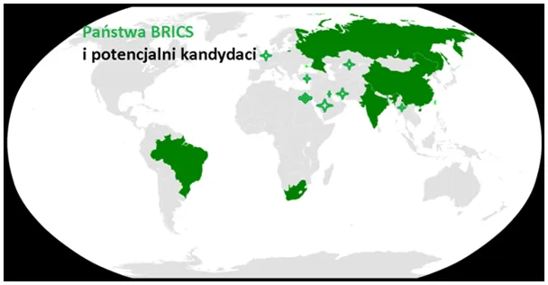
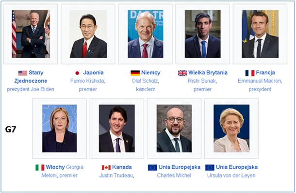

Wojna Światów „na wykresy”
Od początku „pandemii„ na swym starym profilu pisałem dużo o statystykach medycznych, które nie dawały żadnych podstaw do paniki i szukałem niemedycznych powodów globalnego zamieszania.
Coraz częściej pisałem o ruchach amerykańskiej i chińskiej floty oraz o nowinkach w komputerach kwantowych i kreacji cyfrowego pieniądza tej nadchodzącej ery. Obecna wojna to dalszy ciąg tej samej rywalizacji północy z południem lub wschodu z zachodem, jak kto woli. Nie jestem fanem wskaźnika Produkt Narodowy Brutto PKB (ang. GDP), ale taki mamy na stole. Poniższy wykres w roku 2020 pokazywał, że te linie zaraz się przetną.
Dziś wiemy, że trendów nie udało się odwrócić. Niestety rzymska zasada „zrobił ten, kto zyskał” tu jest mało przydatna, bo nie widzimy żadnej zmiany w trendach po 2020. Zagadką nadal pozostaje, czy to zachód, czy wschód zagrał pandemią, aby coś zmienić. Sceptycy mówią, że ktoś trzeci.

Nie ulega wątpliwości, że świat zachodni zrodzony z łacińskiego dziedzictwa, który stał się globalną potęgą, ginie w oczach od chwili, gdy od swych łacińskich korzeni się odciął. Zasoby technologiczne ciągle nie są w stanie zastąpić demografii w tworzeniu potęgi. Zachód liczy na AI, która zmniejszy koszty i znów uczyni nas konkurencyjnymi. Niestety AI jest dostępna dla wszystkich i to nie ona tworzy siłę imperium, tylko tworzą ją połączone motywacje milionów członków społeczności. Cywilizacja bez dzieci przejada hedonistycznie majątki dziadków a nie tworzy kapitału dla swych dzieci.

Od 50. lat pozorne bogactwo zachodu wynika tylko z jednego. Miliony jedynaków odziedziczyły nieruchomości budowane w wielodzietnych rodzinach przez wieki. Zdegenerowani rentierzy będą coraz taniej sprzedawać swe majątki przy braku spadkobierców. Po to właśnie z południa i wschodu przyjechały miliony.
Paweł Klimczewski